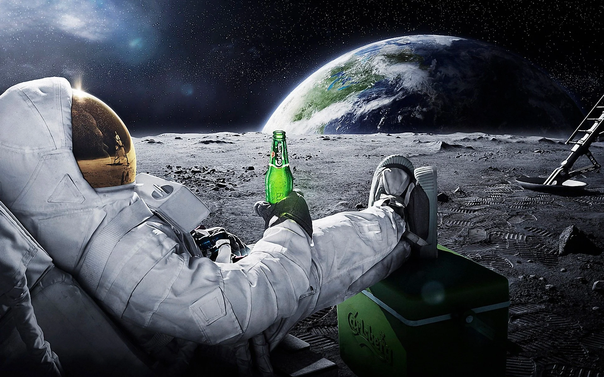

Space tourism is basiacly a short travel to space that cost thousands of milions of dolars and lasts for a few hours/days .So its not somethink that everyone can do for several times.The scientists are saying that space tourism will be just normal as going to the market in the future.
I think that this question belongs to another question;"When?".If we are talking for today no.Firstly first only one or a bit more percent of the people can do it.We are talking about milion dolars.Not every family can pay that much money(3X cause they are a family).And the second reason is that it has a lot of risk.Okay,the chance of an space ship to crush somethink could be less chance than getting killed by a spider(wich has a lower chance than getting killed by thunder or cat)but theres stil a chance.And if we calculete that one percent of the people(800 thousand people)of the worlds population would try this, the chance is alot.And they can even crush each other.The third problem is that its so dangerous for the envoriment.Just think about it;what happens if 1 thousand spaceships that contains 2 of the most dangerous gasses inside launches while they are scattering thoose 2 gasses to the air?There wont be anythink left called envoriment.For the future;why not?.I mean like the 5g thecnology is dangerous right now to.But we belive that it could be safe and accessible.And we still didnt lost our hope about the self-driving cars altough its dangerous for people.Why wont it happen to the space toursm aswell?Theres not much difrence between them.It will be such a daily routine like looking to our phone,computer or thecnological devices that we told they are imposible around 100 years ago.
Offcourse!I mean,if there sill be somethink called job is exist in the future.Cause machines or some AI programes could do it easily.But if there will,then yes.I do think that the pasaport system would be the same for the space tourism to.Or somethink simmilar to that.And they has to be checked.So we would need someone to check them.And we would need someone to calculate where rocket would go,add fuel to the rocket and even build the rocket.So yeah,if machines or AI's wont take our place there would and should be a job called space tourisming or somethink.
Yeah,they did.As you can see at the table below -wich i took it from the site that opens when you click to the table- the cheapest trip was 20 milion dolars and last for only 8 days.And you can see alot more space tourizm examples by just clicking the table below.(you need to refresh the page to click it again!)

I know it seems like a stupid question when at the first seem but when you think about it for a bit you'll get the point;Why should we travel to the space while we can just enter to the metaverse that feels and looks like the real life?Well,we cant add the things that we didnt discoverd to the metaverse unless we are a seer right?Like i said,i think the space tourism could evolve into 2 things;first is that it will be just like going to another country.What i mean is that if we discover another planet to live it wwill be just as simple as going to another country that humanity didnt discovered 100 years ago.The second thing is that it only would be used for discovering.Other than that it will be useless cause of the metaverse
Yeah,it will.But the real question here should be what type would it be.İf you understand the space tourism as goin to space then it could be a part of our life 15 to 25 years later by just going up by 80 kilometers and you are done!You are at the space now!But if you understand space tourism like going for holiday to another country or city then its a whole another story.Scientists are predicting that after 67 to 100 years,going to another planet and living there will be just a part of our life.But if we turn back to the main question which is "would there be somethink called space tourism"the answer is yes.Like some philosophers once said: -its inevitable...
Click here to see the sources